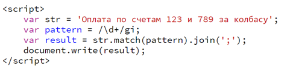

Регулярные выражения (RegExp) в Power Query
509 15.07.2020 Скачать пример
Если вы хотя бы чуть-чуть знакомы с регулярными выражениями, то рекламировать вам их не нужно. Если же вы не совсем в теме, то регулярные выражения (Regular Expressions = RegExp = "регэкспы" = "регулярки") - это язык, где с помощью специальных символов и правил производится поиск нужных подстрок в тексте, их извлечение или замена на другой текст. Это очень мощный и красивый инструмент, на порядок превосходящий по возможностям все остальные способы работы с текстом.
Я уже подробно и с кучей примеров из жизни описывал, как можно добавить поддержку регулярных выражений в Excel с помощью несложных макросов - если вы ещё не читали эту статью, то крайне рекомендую с ней ознакомиться прежде чем продолжать. Откроете для себя много нового, гарантирую :)
Открытым, тем не менее, остается вопрос - а как добавить возможность использовать регулярные выражения в Power Query? Power Query, конечно, хороша и сама по себе и много чего умеет делать с текстом (резать, клеить, чистить и т.д.), но если бы удалось скрестить это с мощью регулярных выражений - это была бы просто бомба.
Встроенных функций для работы с RegExp'ами в Power Query, к сожалению, нет и официальная справка и техподдержка Microsoft отвечают на этот вопрос отрицательно. Однако, есть способ обойти это ограничение :)
Суть метода
Главная идея проста до безобразия.
В списке встроенных возможностей Power Query есть функция Web.Page. Описание этой функции на оф.сайте справки Microsoft предельно лаконично:
В переводе это будет: "Возвращает содержимое документа HTML, разбитого на составные структуры, а также представление полного документа и его текста после удаления тегов." Так себе описание, прямо скажем.
Обычно эта функция используется при импорте данных из веба и автоматически подставляется, например, когда мы выбираем на вкладке Данные команду Из интернета (Data - From web). Мы даём функции в качестве аргумента веб-страницу, а она возвращает нам её содержимое в виде таблиц, вычистив предварительно все теги.
Что в справке НЕ написано, так это то, что помимо языка разметки HTML функция Web.Page поддерживает скрипты на языке JavaScript, который сейчас повсеместно используется на веб-сайтах в интернете. А JavaScript, в свою очередь, всегда умел работать с регулярными выражениями и имеет встроенные функции для RegExp'ов! Так что для реализации регулярок в Power Query нам нужно будет скормить функции Web.Page в качестве аргумента маленькую программку на JavaScript, которая и сделает за Power Query всю работу.
Как это выглядит на чистом JavaScript
Подробных руководств по работе с регулярными выражениями на JavaScript в интернете - масса (например, раз, два).
Если коротко и упрощенно, то код на JavaScript будет выглядет так:

Здесь:
Также обратите внимание, что текстовые строки (за исключением регулярного выражения) в JavaScript заключаются в апострофы, а не в кавычки, как в Power Query или VBA.
На выходе этот скрипт выдаст нам в качестве результата все числа, найденные в исходном тексте:
123;789
Краткий курс по JavaScript закончен, всем спасибо. Надеюсь, вы ухватили логику :)
Осталось перенести эту конструкцию в Power Query.
Функция поиска и извлечения текста по регулярному выражению в Power Query
Делаем следующее:
1. Открываем Excel и создаем новый пустой запрос Power Query на вкладке Данные - Получить данные / Создать запрос - Из других источников - Пустой запрос (Data - Get data / New query - From other sources - Blank query). Если у вас старая версия Excel 2010-2013 и Power Query у вас не встроена, а была установлена как отдельная надстройка, то всё это будет на вкладке Power Query, а не Данные.
2. В открывшемся пустом окне редактора запросов в правой панели сразу вводим имя нашей будущей функции (например, fxRegExpExtract)
3. Идём на вкладку Просмотр - Расширенный редактор (View - Advanced Editor), стираем весь М-код пустого запроса и вставляем туда код нашей суперфункции:
Следите за руками:
В первой строке мы говорим, что в нашей функции будет три текстовых аргумента: txt - исходный анализируемый текст, regex - шаблон регулярного выражения, delim - символ-разделитель для вывода результатов.
Далее вызываем функцию Web.Page, формируя у нее в аргументе описанный выше код на JavaScript. В код вклеиваем и подставляем наши аргументы-переменные.
Фрагмент:
[Data]{0}[Children]{0}[Children]{1}[Text]{0}
... нужен, чтобы "провалиться" в нужную нам таблицу с результатами. Дело в том, что функция Web.Page в качестве результата выдает несколько вложенных друг в друга таблиц, повторяющих структуру веб-страницы. Без этого фрагмента М-кода наша функция выдавала бы на выходе это:
... и нам пришлось бы несколько раз щелкать мышью по слову Table, последовательно "проваливаясь" в дочерние вложенные таблицы в столбцах Children:
Вместо всей этой котовасии мы сразу в коде нашей функции указываем какая вложенная таблица и столбец (Text) нам нужны.
Вот, собственно, и всё секреты. Осталось нажать на кнопку Готово в окне Расширенного редактора, куда мы вставили наш код, и можно приступать к самому вкусному - пробовать нашу функцию в работе.
Вот вам пара примеров для затравки.
Пример 1. Извлекаем номер счета и дату из описания платежа
Имеем банковскую выписку с описанием (назначением) платежей, где нужно вытащить в отдельные столбцы номера и даты оплаченных счетов:
Грузим таблицу в Power Query стандартным образом через Данные - Из таблицы / диапазона (Data - From Table/Range).
Затем добавляем вычисляемый столбец с нашей функцией через Добавление столбца - Вызывать настраиваемую функцию (Add Column - Invoke Custom Function) и вводим её аргументы:
В качестве регулярного выражения (аргумент regex) используем шаблон:
(\d{3,5}|\d{2}\.\d{2}\.\d{4})
... в переводе на человеческий язык означающий:
числа от 3 до 5 разрядов (номера счетов)
или
фрагменты вида "2-разрядное число - точка - 2-разрядное число - точка - 4-разрядное число", то бишь даты вида ДД.ММ.ГГГГ.
В качестве символа-разделителя (аргумент delim) вводим точку с запятой.
После нажатия на ОК наша волшебная функция анализирует все исходные данные по нашему регулярному выражению и формирует нам столбец с найденными номерами и датами счетов:
Останется его разделить по точке с запятой с помощью команды Главная - Разделить столбец - По разделителю (Home - Split column - By delimiter) и мы получим то, что хотели:
Красота!
Пример 2. Извлекаем адреса эл.почты из текста
Предположим, что у нас в качестве исходных данных есть вот такая таблица:
... откуда нам нужно вытащить встречающиеся там адреса эл.почты (для наглядности я выделил их в тексте красным).
Как и в прошлом примере, грузим таблицу в Power Query стандартным образом через Данные - Из таблицы / диапазона (Data - From Table/Range).
Затем добавляем вычисляемый столбец с нашей функцией через Добавление столбца - Вызывать настраиваемую функцию (Add Column - Invoke Custom Function) и вводим её аргументы:
Парсинг адресов эл.почты - задача посложнее и для её решения есть куча регулярок разной степени кошмарности. Я использовал один из простых вариантов - не идеальный, но вполне работающий в большинстве случаев:
[\w|.|-]*@\w*\.[\w|.]*
В качестве разделителя (delim) можно ввести точку с запятой и пробел.
Жмём на ОК и получаем столбец с извлеченными из исходной текстовой "каши" адресами эл.почты:
Магия!
P.S.
Как говорится: "нет такой хорошей вещи, которую нельзя было бы сделать ещё лучше". Power Query и сам-то по себе крут, а уж в сочетании с регулярными выражениями даёт нам совершенно нереальную мощь и гибкость в обработке любых текстовых данных. Надеюсь, Microsoft когда-нибудь добавит поддержку RegExp в обновлениях Power Query и Power BI и все описанные выше танцы с бубном останутся в прошлом. Ну, а пока - так.
Также вдогон хочу добавить, что с регулярными выражениями удобно играться на сайте https://regexr.com/ - прямо в онлайн-редакторе. Там же в разделе Community Patterns есть огромное количество готовых регулярок на все случаи жизни. Экспериментируйте - вся мощь регулярных выражений теперь к вашим услугам и в Power Query!
Ссылки по теме